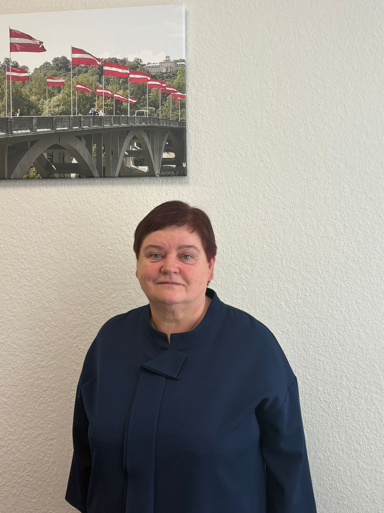

"Ir svarīgi iemācīties mācīties, jo tas noder visur dzīvē."
Strādā Siguldas pilsētas vidusskolā kopš 2011.gada
Intervētāja Emīlija Lemberga
Kā Jūs nolēmāt kļūt par skolas direktori?
Pirms darba Siguldas pilsētas vidusskolā biju Siguldas 3. pamatskolas direktore. Kad tika apvienotas Siguldas 2. vidusskola un Siguldas 3. pamatskola, tika izveidota jauna skola. Es kandidēju uz direktores amatu jaunizveidotajā skolā, piedalījos konkursā un ieguvu iespēju turpināt darbu kā skolas direktore.
Vai Jūs iepriekš strādājāt arī par skolotāju?
Jā. Esmu absolvējusi Latvijas Universitātes Fizikas un matemātikas fakultāti un daudzus gadus strādāju par matemātikas skolotāju. Darbu skolā sāku uzreiz pēc augstskolas absolvēšanas un vēlāk paralēli direktores darbam turpināju arī mācīt matemātiku.
Kas Jums visvairāk patīk savā darbā?
Man visvairāk patīk iespēja palīdzēt cilvēkiem un redzēt, ka kopīgi izdodas atrisināt dažādas problēmas. Ir patīkami palīdzēt skolēniem, skolotājiem un vecākiem, kā arī redzēt, ka skola attīstās un kļūst arvien labāka.
Kādi ir lielākie izaicinājumi, vadot skolu?
Lielākais izaicinājums ir sekot līdzi pārmaiņām un jaunajām tehnoloģijām, jo izglītība ļoti strauji mainās. Svarīgi ir saprast, kuras jaunās lietas skolēniem būs noderīgas nākotnē, vienlaikus saglabājot arī cilvēcīgu kontaktu un labas attiecības skolā.
Kā tehnoloģijas ir ietekmējušas mācību procesu?
Tehnoloģijas mācību procesā palīdz ļoti daudz, jo tās padara darbu interesantāku un ērtāku. Tomēr ir svarīgi tās izmantot saprātīgi un neaizmirst arī par klātienes komunikāciju. Skolēniem ir jāiemācās atpūsties no telefoniem un datoriem, kā arī attīstīt prasmi sarunāties ar cilvēkiem.
Kā skola ir mainījusies kopš Jūsu darba sākuma?
Skola gadu gaitā ir ļoti attīstījusies un kļuvusi modernāka. Ir uzbūvēts sporta centrs un laboratoriju korpuss, kā arī uzlabota mācību vide. Tagad visa skola darbojas vienā ēkā, kas ikdienu padara daudz ērtāku gan skolēniem, gan skolotājiem.
Kuras skolas tradīcijas Jūs uzskatāt par vissvarīgākajām?
Ļoti svarīgs ir 1. septembris, izlaidumi un 11. novembra Lāpu gājiens, kas vieno visu skolu.
Ar ko šī skola ir īpaša?
Manuprāt, šī skola ir īpaša ar savstarpējo atbalstu un attiecībām starp skolēniem un skolotājiem. Ja rodas problēmas, mēs cenšamies tās risināt kopā un sadarbojamies arī ar psihologu, sociālo pedagogu un citiem speciālistiem. Skolā svarīgi ir tas, lai neviens nejustos viens ar savām grūtībām.
Kā Jūs motivējat skolēnus mācīties?
Vislabāk palīdz individuālas sarunas, kurās skolēns pats sāk domāt par savu nākotni un iespējām. Dažreiz pietiek ar vienu sarunu, lai cilvēks paskatītos uz situāciju citādi un saprastu, ko viņš vēlas sasniegt dzīvē.
Kādu padomu Jūs dotu skolēniem?
Es ieteiktu skolēniem vairāk ieklausīties sevī un laikus domāt par savu nākotni. Ir svarīgi atrast savu ceļu un izvēlēties vidi, kurā cilvēks jūtas labi un motivēti. Tāpat ļoti svarīgi ir iemācīties mācīties, jo šī prasme noderēs visu dzīvi.
Kāds ir bijis Jūsu neaizmirstamākais brīdis skolā?
Ļoti īpašs bija brīdis, kad skola ieguva “Viedās skolas” statusu un skolēniem tika nodrošinātas planšetes mācību darbam.
Ko Jūs novēlētu nākamajām skolēnu paaudzēm?
Novēlu izmantot skolas laiku lietderīgi, iemācīties mācīties un prast izvērtēt informāciju, attiecības un savus mērķus.
SĀKUMS